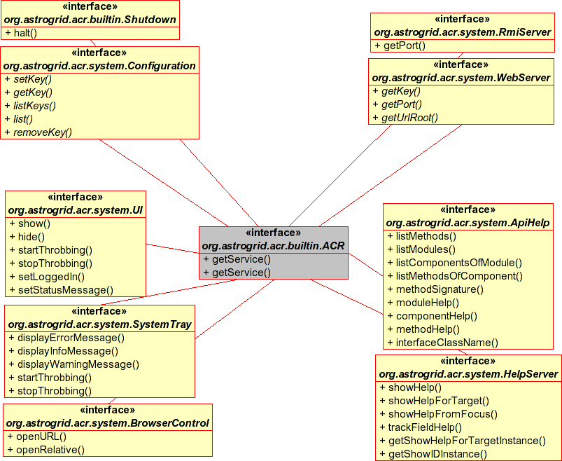

System Module
Service Interfaces for components in the system modules of the ACR -
components that provide basic services, but don't do anything astronomically interesting.
The services are shown below

The system services split into 4 groups
- ACR Management
- {@link org.astrogrid.acr.builtin.Shutdown} halts the ACR. {@link org.astrogrid.acr.system.Configuration}
allows the configuration of the ACR to be inspected and changed.
- User Interface
- {@link org.astrogrid.acr.system.UI}, {@link org.astrogrid.acr.system.SystemTray}, {@link org.astrogrid.acr.system.BrowserControl}
allow aspects of the user interface to be controlled.
- Programming Interface
- {@link org.astrogrid.acr.system.RmiServer} and {@link org.astrogrid.system.WebServer} provides information
on how to connect to the ACR via http / xmlrpc / web
- Help
-
{@link org.astrogrid.acr.system.HelpServer} displays context-help for GUI users. {@link org.astrogrid.acr.system.ApiHelp}
provides api information for scripters and programmers.